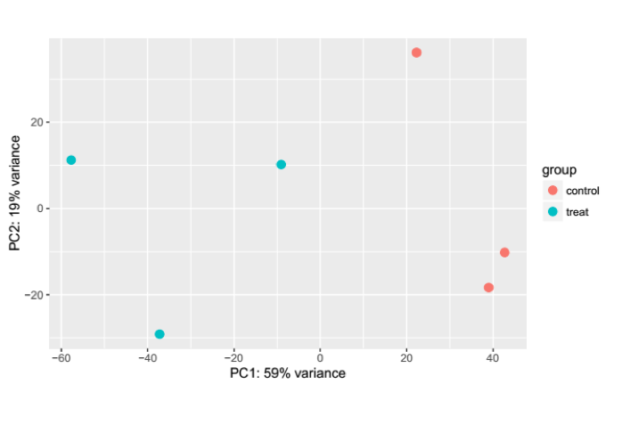
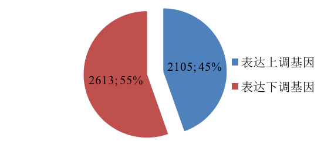
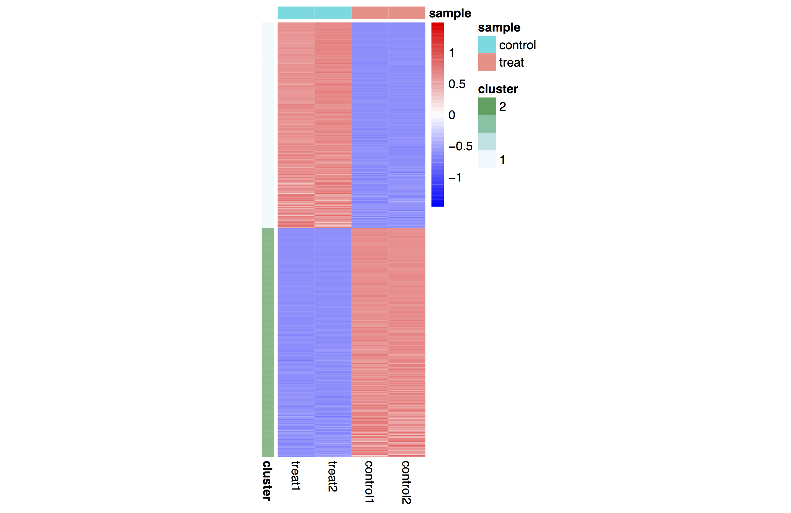
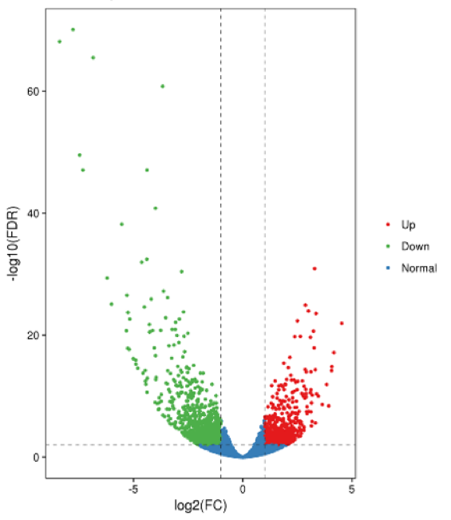

通过回贴定位到基因区域的Reads数目来估计相应基因的表达水平。Reads数目的多少直接反应了基因的表达量，因此直接统计基因上回贴到的Reads数是目前最为常用的评估基因表达水平的方法。
表3 基因表达水平统计样表
| Gene Symbol | Treat1 | Treat2 | Treat3 | Control1 | Control2 | Control3 |
|---|---|---|---|---|---|---|
| A1BG | 3 | 1 | 8 | 4 | 8 | 9 |
| A1BG-AS1 | 0 | 0 | 0 | 0 | 0 | 0 |
| A1CF | 589 | 538 | 460 | 625 | 474 | 509 |
| A2M | 1 | 0 | 2 | 3 | 0 | 6 |
| A2M-AS1 | 5 | 4 | 7 | 2 | 6 | 2 |
| A2ML1 | 1 | 0 | 0 | 1 | 0 | 0 |
| A2MP1 | 0 | 0 | 0 | 0 | 0 | 0 |
| A3GALT2 | 0 | 0 | 0 | 0 | 0 | 0 |
| A4GALT | 527 | 560 | 527 | 513 | 594 | 649 |
| A4GNT | 0 | 3 | 0 | 2 | 0 | 2 |
| … | … | … | … | … | … | … |
图3.5.4 样本基因相关性分析
当样本数目较多时，根据各样本所有基因的表达水平(read counts)，我们可以对样品进行主成分分析(Principal Component Analysis，PCA)。主成分分析是一种将多个变量通过线性变换以选出较少个数重要变量的多元统计分析方法，它通过降维的手段将大量影响表达模式的基因变换成少数几个主成分，尽可能多地保留原始变量的信息，且彼此间互不相关，将这几个主成分作线性组合，作为新的综合指标来对样品进行聚类分析，具体结果如图3.5.5所示
图3.5.5 样本表达水平的PCA聚类图
在得到基因表达值以后，差异基因筛选是整个RNA-seq分析的关键一步。现在科研领域中针对RNA-seq数据差异基因筛选的软件非常多，如edgeR，limma，或者DEseq等等。选择什么样的软件和参数都会对结果产生相当大的影响，因此这一步骤中软件和参数的选择显得至关重要。我们根据客户的数据特点，选择合适软件进行差异基因筛选。 差异表达基因结果展示如表5 ：
表4 差异基因结果示意表
| Gene Symbol | baseMean | log2FC | lfcSE | stat | pval | padj |
|---|---|---|---|---|---|---|
| PER1 | 423.3092719 | -0.572766157 | 0.168512867 | -3.398946125 | 0.00067646 | 0.999509376 |
| UNC5B | 42.94226372 | -1.093134279 | 0.34716899 | -3.148709452 | 0.001639932 | 0.999509376 |
| CHRNB1 | 65.68120407 | 0.753102655 | 0.254082558 | 2.964007692 | 0.003036607 | 0.999509376 |
| NCOA5 | 346.6340181 | 0.497894443 | 0.171045329 | 2.910891781 | 0.003603988 | 0.999509376 |
| CLDN7 | 151.9938813 | -0.551411491 | 0.192098016 | -2.870469468 | 0.004098628 | 0.999509376 |
| MRPL32 | 657.9713521 | 0.305511511 | 0.106912607 | 2.857581726 | 0.004268827 | 0.999509376 |
| Gene Symbol | Treat1 | Treat2 | Treat3 | Control1 | Control2 | Control3 |
|---|---|---|---|---|---|---|
| PER1 | 392.646376 | 293.5164911 | 334.9691862 | 561.9314193 | 544.8259897 | 411.966169 |
| UNC5B | 25.7641979 | 21.55191018 | 34.98095932 | 65.27486183 | 65.80491528 | 44.27673779 |
| CHRNB1 | 81.41486538 | 80.04995211 | 85.86235469 | 45.40859954 | 53.22456383 | 48.1268889 |
| NCOA5 | 350.3930915 | 449.5112696 | 417.6514537 | 255.4233724 | 259.3487837 | 347.4761379 |
| CLDN7 | 127.7904216 | 113.9172395 | 128.2635175 | 210.9607853 | 164.5122882 | 166.5190356 |
| MRPL32 | 714.1835659 | 747.1328864 | 720.8197678 | 601.6639438 | 599.0182729 | 565.0096757 |
注：
(1) gene_id: 基因名称，默认格式为gene symbol ID;
(2) baseMean: 基因在样本中的平均表达数值统计；
(3) log2FC: log2(Fold Change), 实验组与对照组比值取LOG；
(4) lfcSE：log2FC的标准方差，用以算p-value值;
(5) stat：logFC与lfcSE的比值，原则上服从t分布，用来计算p-value; 该数值如果为正数，代表基因上调；该数值如果为负数，代表基因下调;
(6) pval(p-value)：基因差异表达显著性统计参数，数值越小代表显著性越高；一般认为p-value < 0.05 即为显著性具有统计意义;
(7) padj(adjusted p-value)：是经过多重假设检验调整过的p-value;
(8) 本次课题中差异表达基因分析选用软件DESeq2;
(9) 所有基因表达值完整列表见附件“/结果文件/phase2-DiffExpGenes/ Treat_vs_control_diff.xls”。
差异表达基因结果统计：
图3.5.6 差异表达基因结果统计饼图
差异表达基因热图结果展示： 热图分析可以更直观的看到差异基因在各个处理组中的表达值，并且hierarchical聚类也会使得差异表达基因聚类，便于后续分析。
图3.5.7 差异表达基因结果统计热图
注：
(1) 每一行代表一个差异表达基因，红色表示上调，蓝色表示下调；
(2) 每一列代表一个样本，从左往后分别为3个实验组，3个对照组样本；
(3) treat1, treat2, treat3分别对应3个实验组;
(4) control1,control2，control3对应3个对照组；
(5) 根据基因表达量变化将基因分为两类：上调基因、下调基因；
原始文档见附件“/结果文件/phase2-DiffExpGenes/Treat_vs_control_diff.pdf”。
差异表达基因火山图展示：
火山图可直观显示表达差异显著性基因的整体分布情况，横坐标表示基因在不同样本中的表达倍数变化(log2FoldChange)，纵坐标表示表达差异的显著性水平(-log10padj)。若比较组合无表达差异显著性基因，默认调整筛选表达差异显著性的阈值进行火山图的绘制。上调基因用红色点表示，下调基因用绿色点表示，如图3.5.8所示:
图3.5.8 差异表达基因火山图
原始文件见附件“/结果文件/phase2-DiffExpGenes/Treat_vs_control_volcano.pdf”。